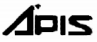
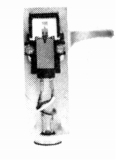
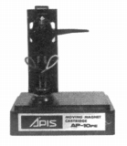
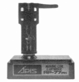
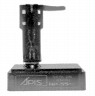

ORTHO（オルト）/A'PIS（アーピス）
交換針の供給などで知られる弘和産業の自社カートリッジのブランド。当初(1979年頃）はORTHO（オルト）*を名乗っていたが、その後、A'PIS（アーピス）を使うようになった。現在（2018／1月）も交換針の供給は続いている。
*このメーカーの初期のブランド名「ORTHO」は、「Stereo Sound」社のYear Bookでは（オルソ）と表記されている。当サイトもそれに倣っていたが、このブランドの実機を入手した方の話だと、（オルト）と読むそうである。
�T.カートリッジ
1.MM型
（1）ORTHO（オルト）時代の製品

(2)A'PIS（アーピス）時代の製品

(AP-10PE)
